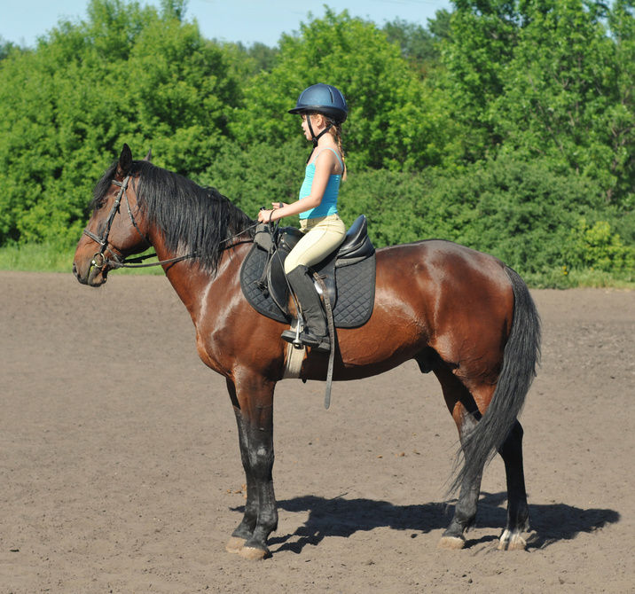

Riding Stables and Lesson Programs
Riding Stables and Lesson Programs
Here is information about and links to area riding stables and lesson programs. The stables are listed by county. Many of the riding stables offer boarding for your horse(s), and most of these also have their own riding instructors who offer lessons. Some stables allow bringing your own trainer for lessons.

| Stable Name | Website | Street Address | County | Services Offered |
|---|---|---|---|---|
| Blue Moon Stables | http://www.bluemoonstables.biz | 1120 Whippoorwill Lane, Chapel Hill | Orange | Saddleseat, Lessons, Summer Camps |
| Chapel Hill Equestrian | http://www.chapelhillequestrian.net/default.htm | 6614 Alexander Dr, Chapel Hill | Orange | Boarding, Lessons, Hunters, Dressage |
| Double Take Stables | http://doubletakestables.weebly.com | Chapel Hill | Orange | Boarding, Lessons, Hunters, Jumpers, Summer Camps |
| Flying W Ranch | https://www.facebook.com/Flying-W-Ranch-366577716687074/ | 5120 St Marys Rd, HillsboroughJ | Orange | Boarding, Western, Hunter under Saddle, Lessons, Summer Camp |
| Mane Event Stables | http://maneeventstables.com | 2545 Hwy 54 W, Chapel Hill | Orange | Boarding, Lessons, Hunters, Eventing, Summer Camps |